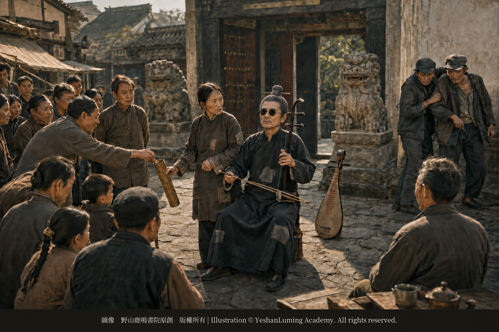

天使的救贖·阿炳的妻子董催弟Salvation by an Angel · Dong Cuidi, Abing’s Wife
China’s Beethoven · Blind Musician AbingSalvation by an Angel · Dong Cuidi, Abing’s Wife
China’s Beethoven · Blind Musician Abing天使的救贖·阿炳的妻子董催弟
中國的貝多芬·瞎子阿炳
中國的貝多芬·瞎子阿炳（106）China’s Beethoven · Blind Musician Abing (106)
在瞎子阿炳充滿黑暗、放逐與悲愴的傳奇一生中，他的妻子董催弟，是唯一一個對他不離不棄、給過他人間溫暖，並陪伴他走到生命終點的偉大女性。
在艱難孤獨的賣藝生涯中度過漫長歲月後，二十世紀三十年代，阿炳的命運終於迎來了最溫暖的轉折——他結識了後來與自己相依為命的妻子董催弟。
董催弟不是名門閨秀，也不懂音樂。她只是一個普通的、命運同樣坎坷的底層農村婦女。但是，對於在孤獨、貧窮和黑暗中掙扎的阿炳來說，董催弟的到來，無疑是上天派給他的救贖天使。她變成了他的依靠、他的眼睛、他的保護神。
根據目前發現的無錫戶籍檔案，董催弟生於1889年1月18日，比阿炳年長四歲。她祖籍江蘇江陰北漍。在結識阿炳之前，她曾在江陰農村有過一段婚姻。她的前夫因病早逝。在那個極度保守的年代，一個守寡的農村婦女，在夫家和娘家都備受歧視與排擠。
為了活命，她不得已離開與前夫生下的幾個兒女，隻身一人流落到繁華的無錫城，靠給大戶人家做女傭、幫工和針線活勉強度日。
二十世紀三十年代，此時的阿炳已經雙目失明多年，在街頭過著飢一頓、飽一頓的流浪賣藝生活。經崇安寺附近好心街坊的介紹與撮合，這兩個同樣被命運拋棄、在社會最底層掙扎的苦命人走到了一起，正式結為夫妻。
在瞎子阿炳充滿黑暗、放逐與悲愴的傳奇一生中，他的妻子董催弟，是唯一一個對他不離不棄、給過他人間溫暖，並陪伴他走到生命終點的偉大女性。
在艱難孤獨的賣藝生涯中度過漫長歲月後，二十世紀三十年代，阿炳的命運終於迎來了最溫暖的轉折——他結識了後來與自己相依為命的妻子董催弟。
董催弟不是名門閨秀，也不懂音樂。她只是一個普通的、命運同樣坎坷的底層農村婦女。但是，對於在孤獨、貧窮和黑暗中掙扎的阿炳來說，董催弟的到來，無疑是上天派給他的救贖天使。她變成了他的依靠、他的眼睛、他的保護神。
根據目前發現的無錫戶籍檔案，董催弟生於1889年1月18日，比阿炳年長四歲。她祖籍江蘇江陰北漍。在結識阿炳之前，她曾在江陰農村有過一段婚姻。她的前夫因病早逝。在那個極度保守的年代，一個守寡的農村婦女，在夫家和娘家都備受歧視與排擠。
為了活命，她不得已離開與前夫生下的幾個兒女，隻身一人流落到繁華的無錫城，靠給大戶人家做女傭、幫工和針線活勉強度日。
二十世紀三十年代，此時的阿炳已經雙目失明多年，在街頭過著飢一頓、飽一頓的流浪賣藝生活。經崇安寺附近好心街坊的介紹與撮合，這兩個同樣被命運拋棄、在社會最底層掙扎的苦命人走到了一起，正式結為夫妻。
自從有了董催弟，阿炳那種近乎自我毀滅的流浪生活，終於有了一絲活氣、一絲煙火氣。在無錫崇安寺和無錫城內各地的賣藝生涯中，董催弟成了阿炳不可或缺的依靠，更成了他的保護神。
每天下午和深夜，無錫市民都會看到這樣一幅畫面：身材矮小、瘦弱的董催弟，身邊跟著身材高大的瞎子阿炳。阿炳背著琵琶，一手提著二胡，另一隻手搭在妻子的肩膀上，由她牽引著，在無錫城內特有的石板路上穿行。
阿炳在外面拉琴、說唱賣藝時，董催弟就靜靜地守在一旁。她負責幫阿炳照看衣物，並拿著一個小竹筒，向圍觀的茶客和百姓收取賞錢。
在那個流氓地痞橫行霸道的無錫街頭，特別是在阿炳經常賣藝的崇安寺，如果有小癟三想趁阿炳眼瞎偷走賞錢，或者有地痞流氓想動粗、欺負阿炳，身材瘦小的董催弟就會立刻衝上去，不顧一切地開口大罵，並用自己的身體保護丈夫。
她不畏強暴、不顧一切的強大氣勢，嚇跑了那些外強中乾、欺軟怕硬的歹徒。她把自己弱小的身軀，變成了阿炳的保護神。
阿炳沒有錢，只能租住無錫圖書館路三聖閣道觀裡的一間破舊、漏雨的小屋。經過董催弟的收拾、佈置，雖然屋內仍然一貧如洗，但至少有了人間的生氣。阿炳可以吃上熱飯熱菜，床上的被褥雖然破舊，但至少乾淨。這讓苦難中的阿炳，終於有了一個清貧卻溫馨、乾淨的小家。
在董催弟的照顧下，阿炳外出賣藝時必穿的黑色道袍，雖然破舊，卻被董催弟洗得乾乾淨淨；破損的地方，也被她一針一線地補好。這讓雖然貧困、卻仍然極力保持自己高貴靈魂的阿炳，外出賣藝時總是衣著整齊、乾乾淨淨，在貧窮中透著一種無法被藐視的尊嚴。

Click to enlarge
據後來的相關記載，董催弟與鍾姓前夫育有數名兒女，其中有資料記載為三個女兒和兩個兒子。雖然董催弟因為生計，不得已隻身流落無錫，但是當她的兒女們長大成人後，他們逐漸理解了母親，也沒有忘記和拋棄這個改嫁的可憐母親。
抗戰勝利後，董催弟的長女鍾桂芳以及其他兒女，曾多次從江陰老家專程趕到無錫崇安寺，看望兩位老人。在他們的眼裡和心目中，那個戴著墨鏡、一身煙味、會拉二胡的瞎子阿炳，就是他們的「繼父」。
他們每次來，都會帶上一些鄉下自己種的稻米和自己養的雞鴨，接濟這對窮困潦倒的夫妻，也讓終身沒有親生兒女的阿炳，感受到了久違的家庭溫暖。
為了解除阿炳膝下無子的遺憾，二十世紀四十年代末，董催弟的兒子，也就是阿炳的繼子，將自己1944年出生的女兒過繼給阿炳和董催弟做孫女。這個女孩後來改名叫華求弟。阿炳和董催弟去世後，她返回親生父母身邊，才改回本名鍾球娣。
大約四歲時，小求弟被送到無錫圖書館路那間破舊的小屋裡。在她的童年記憶中，公公阿炳雖然眼瞎，脾氣也有些古怪，但是對她這個小孫女，卻極其疼愛。
自從有了小求弟，阿炳每天上街賣藝賺了錢，不管多少，都會在回家前買些糖果。回到家後，他便摸索著把糖果塞進喊他「爺爺」的小求弟嘴裡。這讓孤獨的阿炳感受到了久違的人生樂趣與喜悅。
董催弟陪伴阿炳度過了人生最後、也是最艱難的十多年。
1950年冬天，阿炳因長期積勞成疾、肺病惡化，已經臥床不起。家中斷水斷糧，生活陷入絕境；阿炳的大煙癮也被迫戒斷，只能在病床上痛苦地抽搐、掙扎。此時的董催弟也已經年過六旬、積勞成疾。這個風雨飄搖的家庭，終於走到了山窮水盡的絕境。
1950年12月4日，阿炳在貧病交加中吐血而亡，結束了自己苦難而悲愴的一生。
阿炳走後，董催弟的精神徹底崩潰，生活上也失去了唯一的支柱。僅僅三個多月後，1951年3月27日，這位一生沉默、善良、堅韌不拔的女性，也在那間空蕩蕩的破屋裡孤獨地因病去世。
董催弟不懂什麼巴哈、貝多芬，也不知道丈夫演奏的樂曲，將來會震驚世界。她只是在那個最黑暗、最冰冷的舊時代裡，用一個底層中國婦女最樸素的善良和自己瘦弱的身軀，當了瞎子阿炳十多年不可或缺的眼睛和保護神。
如果沒有董催弟在街頭的牽引與保護，疾病、飢餓和街頭的欺凌，或許早已奪走阿炳的生命；那首《二泉映月》，也未必能夠流傳到今天。
1983年，無錫市政府在惠山腳下的錫惠公園為阿炳重修墓園，將他的遺骨重新安葬。
今天，如果您去無錫拜祭、憑弔阿炳，站在那座如同音樂台一樣宏大的阿炳墓前，追念這位飽經苦難的民間音樂家時，也不應忘記那位曾經牽著他的手，陪伴他走過人生最後十多年風雨的普通女性——董催弟。
阿炳把自己的苦難變成了音樂；董催弟則用自己沉默、堅韌而樸素的愛，讓這位身處黑暗中的音樂家，沒有完全失去人間的溫暖。
（未完待續）
In the legendary life of Blind Abing—a life steeped in darkness, exile, and sorrow—his wife, Dong Cuidi, was the one great woman who never abandoned him, who gave him the warmth of human companionship, and who remained by his side until the end of his life.
After long years of hardship and loneliness as a street performer, Abing’s fate finally took its warmest turn in the 1930s: he met Dong Cuidi, the woman who would become his wife and share the rest of his life.
Dong Cuidi was neither a lady of a distinguished family nor someone who understood music. She was simply an ordinary rural woman from the lowest reaches of society, a woman whose own life had been equally marked by misfortune. Yet to Abing, struggling through loneliness, poverty, and darkness, her arrival was nothing less than the coming of an angel sent from heaven to save him. She became his support, his eyes, and his guardian.
According to household-registration records discovered in Wuxi, Dong Cuidi was born on January 18, 1889, making her four years older than Abing. Her ancestral home was Beiguo in Jiangyin, Jiangsu Province.
Before meeting Abing, she had once been married in the Jiangyin countryside. Her first husband died young from illness. In that deeply conservative age, a widowed rural woman was often scorned and rejected by both her husband’s family and her own.
To survive, she had no choice but to leave behind the children she had borne with her first husband and make her way alone to the prosperous city of Wuxi. There, she barely managed to support herself by working as a maid and domestic helper in wealthy households and by taking in needlework.
By the 1930s, Abing had already been blind for many years. He lived as a wandering street performer, never knowing where his next meal would come from. Through the introduction and matchmaking of kindhearted neighbors near Chong’an Temple, these two suffering souls—both cast aside by fate and struggling at the very bottom of society—came together and formally became husband and wife.
In the legendary life of Blind Abing—a life steeped in darkness, exile, and sorrow—his wife, Dong Cuidi, was the one great woman who never abandoned him, who gave him the warmth of human companionship, and who remained by his side until the end of his life.
After long years of hardship and loneliness as a street performer, Abing’s fate finally took its warmest turn in the 1930s: he met Dong Cuidi, the woman who would become his wife and share the rest of his life.
Dong Cuidi was neither a lady of a distinguished family nor someone who understood music. She was simply an ordinary rural woman from the lowest reaches of society, a woman whose own life had been equally marked by misfortune. Yet to Abing, struggling through loneliness, poverty, and darkness, her arrival was nothing less than the coming of an angel sent from heaven to save him. She became his support, his eyes, and his guardian.
According to household-registration records discovered in Wuxi, Dong Cuidi was born on January 18, 1889, making her four years older than Abing. Her ancestral home was Beiguo in Jiangyin, Jiangsu Province.
Before meeting Abing, she had once been married in the Jiangyin countryside. Her first husband died young from illness. In that deeply conservative age, a widowed rural woman was often scorned and rejected by both her husband’s family and her own.
To survive, she had no choice but to leave behind the children she had borne with her first husband and make her way alone to the prosperous city of Wuxi. There, she barely managed to support herself by working as a maid and domestic helper in wealthy households and by taking in needlework.
By the 1930s, Abing had already been blind for many years. He lived as a wandering street performer, never knowing where his next meal would come from. Through the introduction and matchmaking of kindhearted neighbors near Chong’an Temple, these two suffering souls—both cast aside by fate and struggling at the very bottom of society—came together and formally became husband and wife.
With Dong Cuidi in his life, Abing’s wandering existence, which had bordered on self-destruction, at last regained a faint breath of life and a touch of domestic warmth. As he performed around Chong’an Temple and throughout the streets of Wuxi, Dong became his indispensable support—and, even more importantly, his guardian.
Every afternoon and late into the night, the people of Wuxi would see the same scene: the small and frail Dong Cuidi walking beside the tall, blind Abing. With a pipa strapped to his back and an erhu in one hand, Abing rested his other hand on his wife’s shoulder and let her guide him along the stone-paved streets so characteristic of the old city.
Whenever Abing played music or performed narrative songs in public, Dong Cuidi quietly kept watch beside him. She looked after his belongings and carried a small bamboo tube in which she collected coins from teahouse patrons and other people gathered around to listen.
The streets of Wuxi in those days were plagued by hooligans and local bullies, particularly around Chong’an Temple, where Abing often performed. If some petty thief tried to steal his earnings because he was blind, or if a thug attempted to intimidate or assault him, the slight and diminutive Dong Cuidi would immediately rush forward. She would hurl abuse at the offender without the slightest hesitation and shield her husband with her own body.
Her fearless and uncompromising ferocity frightened away those cowardly bullies who preyed only upon the weak. With her own frail body, she made herself Abing’s guardian.
Abing had no money and could afford only a dilapidated little room with a leaking roof inside Sanshengge Taoist Temple on Library Road in Wuxi. After Dong Cuidi cleaned and arranged it, the room remained almost entirely bare, but at least it began to possess the warmth of human life. Abing could eat hot meals. The bedding on their bed, though old and worn, was at least clean. At last, amid all his suffering, Abing had a humble but warm and tidy home.
Under Dong Cuidi’s care, the black Taoist robe Abing always wore when performing remained spotless despite its age. Whenever it tore, she patiently mended it, stitch by stitch. Poor though he was, Abing still struggled to preserve the nobility of his soul. Because of Dong, he always went out to perform neatly and cleanly dressed, carrying even in poverty a dignity that no one could dismiss or despise.
Click to enlarge
According to later accounts, Dong Cuidi had several children with her first husband, whose surname was Zhong; some records identify them as three daughters and two sons. Although necessity had forced her to leave them behind and seek a living alone in Wuxi, her children gradually came to understand their mother as they grew older. They neither forgot nor abandoned the unfortunate woman who had remarried.
After the War of Resistance Against Japan ended, Dong’s eldest daughter, Zhong Guifang, and her other children made several special journeys from their home in Jiangyin to Chong’an Temple in Wuxi to visit the elderly couple. In their eyes and in their hearts, the blind man in dark glasses, smelling of smoke and playing the erhu, was their stepfather.
Whenever they came, they brought rice grown in the countryside and chickens and ducks raised by their own families to help the impoverished couple survive. Through them, Abing, who never had biological children of his own, experienced once again the long-lost warmth of family life.
In the late 1940s, hoping to ease Abing’s sorrow at having no descendants, one of Dong Cuidi’s sons—Abing’s stepson—gave his daughter, born in 1944, to Abing and Dong as their granddaughter. The girl was later renamed Hua Qiudi. After Abing and Dong Cuidi died, she returned to her biological parents and resumed her original name, Zhong Qiudi.
Little Qiudi was about four years old when she was sent to live in the dilapidated room on Library Road. In her childhood memories, Grandpa Abing was blind and sometimes rather eccentric, but he showered his little granddaughter with affection.
After Qiudi came into his life, Abing would buy her candy before returning home whenever he earned money from performing in the streets, no matter how little he had made. Once home, he would feel his way toward the child who called him “Grandpa” and place the candy in her mouth. Through her, the lonely Abing rediscovered a joy and delight in life that he had not known for many years.
Dong Cuidi accompanied Abing through the final—and most difficult—decade and more of his life.
By the winter of 1950, years of exhaustion and worsening lung disease had left Abing bedridden. The household had run out of food and water, and their lives had reached a desperate impasse. Deprived of opium, upon which he had long been dependent, Abing could do nothing but convulse and struggle in agony on his sickbed. Dong Cuidi herself was already past sixty, her health broken by a lifetime of hardship. Their fragile household had finally reached the end of its strength.
On December 4, 1950, Abing died after coughing up blood, overwhelmed by poverty and illness. His life of suffering and sorrow had come to an end.
After Abing’s death, Dong Cuidi’s spirit collapsed completely, and she also lost the only support upon which her life had depended. Barely three months later, on March 27, 1951, this quiet, kind, and indomitable woman died alone from illness in that empty, dilapidated room.
Dong Cuidi knew nothing of Bach or Beethoven, nor did she know that the music her husband played would one day astonish the world. In the darkest and coldest years of the old society, she simply offered the plain goodness of an impoverished Chinese woman and the strength of her own frail body. For more than a decade, she served as Blind Abing’s indispensable eyes and guardian.
Without Dong Cuidi to guide and protect him in the streets, illness, hunger, and the cruelty of street life might have claimed Abing much earlier. Moon Reflected on Second Spring might never have survived to reach us today.
In 1983, the Wuxi municipal government rebuilt Abing’s tomb in Xihui Park at the foot of Huishan and reinterred his remains there.
Today, if you travel to Wuxi to pay your respects to Abing and stand before his imposing tomb, shaped like a musical stage, remembering this folk musician who endured a lifetime of suffering, you should also remember the ordinary woman who once held his hand and accompanied him through the storms of his final years—Dong Cuidi.
Abing transformed his suffering into music. Through her quiet, steadfast, and unadorned love, Dong Cuidi made certain that this musician who lived in darkness never entirely lost the warmth of the human world.
(To be continued)